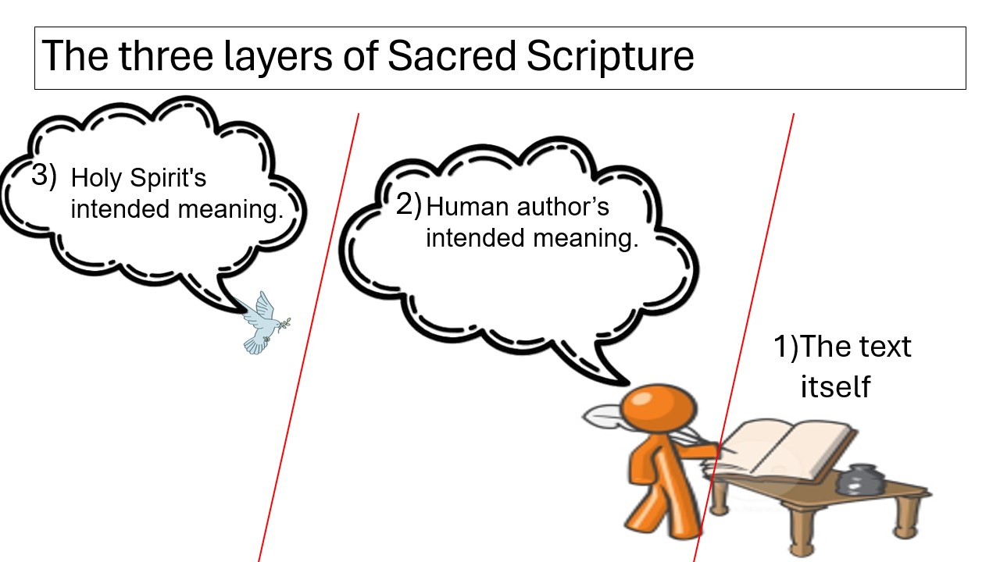

Literary Tools for Biblical Interpretation
This page introduces key literary tools used by religious studies scholars and theologians to interpret Sacred Scripture. These methods help us understand the biblical authors' intentions. Each tool helps us get at the deeper meaning behind the words on the page.
"Since God speaks in Sacred Scripture through men in human fashion, the interpreter of Sacred Scripture, in order to see clearly what God wanted to communicate to us, should carefully investigate what meaning the sacred writers really intended, and what God wanted to manifest by means of their words."
— Dei Verbum, §12
Historical Criticism
The literary tool of understanding writing in the historical, cultural, and biographical context of the author, as a means of "getting at" the intended meaning of their text.

Genre Criticism
The literary tool of understanding writing in the context of the literary genre and conventions in which an author composed a text, as a means of "getting at" the intended meaning of their text.

Source Criticism
The literary tool of understanding writing in the context of the original and independent sources that went into the composite text as we see it today, as a means of "getting at" the intended meaning of the text.

Theological Allegorical Criticism
The (theological) literary tool of understanding divinely inspired writing in the context of the full body of divinely inspired texts and tradition, the canonical context, as a means of "getting at" the divinely intended meaning of the text.

The Three Layers of Sacred Scripture
Sacred Scripture has three layers of meaning. Click the button to reveal each one.

The text itself
The words on the page as written — the surface starting point for all interpretation.
The human author's intended meaning
What the human biblical writer sought to communicate to their original audience through their words — the meaning behind the surface of the text, uncovered through historical, genre, and source criticism.
The Holy Spirit's intended meaning
The deeper divine meaning intended by God, behind even the human author's intended meaning — understood in light of the full witness of Scripture and Sacred Tradition, the goal of theological and allegorical criticism.